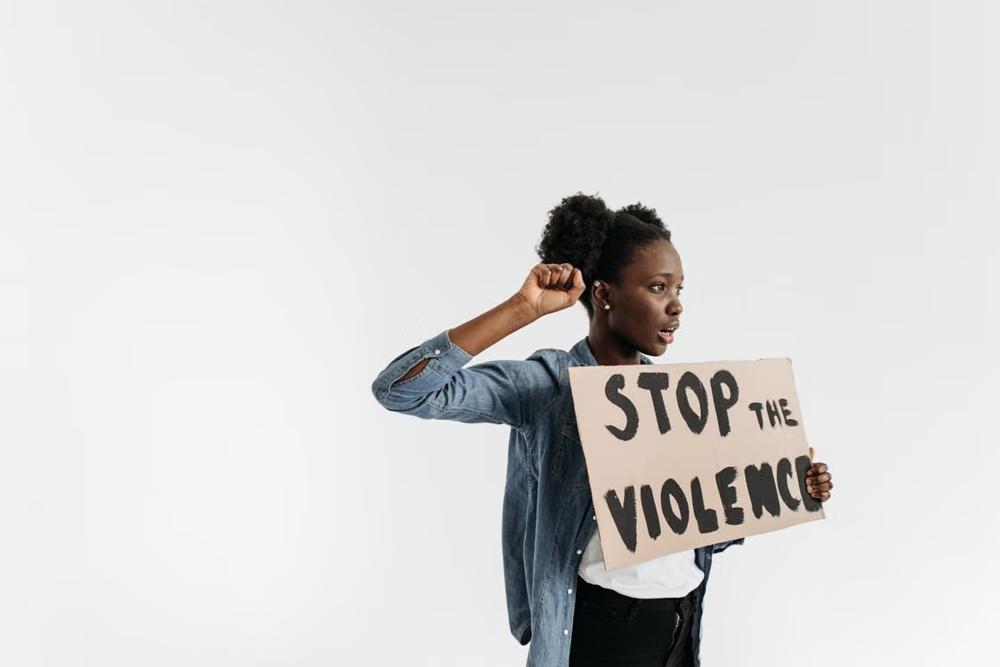

English · Editorial
Domestic Violence as a Public Human Rights Crisis

Domestic violence against women is a public human rights crisis. It is a pattern of abusive behavior used in a relationship to gain power and control over women and children.
In our society today, women inside their own homes are stripped of their voices and their fundamental right to live freely because of domestic violence. This silence continues to persist because of harmful social norms, such as the dismissive phrase “boys will be boys” and rigid expectations that women must stay home while men act as providers. These norms can make abusive behavior seem normal or expected. We must reject harmful gender stereotypes, hold abusers accountable for their actions, and treat domestic violence not as an accepted norm but as an intolerable violation of human rights.
When a woman relies entirely on an abusive partner for essential needs such as money, food, and housing, it creates a dangerous imbalance. An abusive partner may use that power to control her. Over time, enforced dependence can make it incredibly difficult to leave, as women may be led to believe they cannot survive without their abuser. Financial dependence can be used as a tactic to strip women of independence and keep them trapped in abuse and silence.
Data from the Philippine Statistics Authority shows that one in four Filipinas aged 15 to 49 has experienced physical, emotional, or sexual violence from an intimate partner. These data suggest that domestic violence is a public crisis in our country that does not happen only between two people; it affects us all as a society. When Filipinas are subjected to lives of constant violence and fear, it undermines community safety, burdens our healthcare system, and damages the foundation of basic human rights.
Many abused Filipinas choose to stay silent instead of reporting to the police because they fear retaliation and further abuse. In Philippine culture, high expectations that a family should be perfect can create intense social pressure to keep the family together at all costs, forcing women to endure suffering in silence. Furthermore, many survivors lack trust in the police or local barangay officials, believing that authorities will not be able to help them escape abuse. This combination of fear, societal judgment, and systemic neglect leaves victims trapped without a clear path to safety.
Some people argue that domestic abuse is simply a private family matter between a husband and wife, and that outsiders or the government should not interfere. However, domestic violence affects the whole community: its effects can reach children, other family members, friends, neighborhoods, schools, and workplaces. Treating domestic abuse as a private topic can further protect perpetrators and allow systemic harm to go unaddressed.
Our government must enforce Republic Act No. 9262 to protect women and children, affirm survivors’ fundamental rights, and show them that they should not have to stay silent about abuse. Society must also work toward rejecting harmful stereotypes that women should stay at home and that men are inherently superior. We should strive for a community where, regardless of gender, age, race, or social status, everyone treats one another with equality and respect for each other’s dignity. Abusive behavior should never be considered normal or overlooked. Domestic violence is a public crisis, and ending it requires legal enforcement and unwavering support for every survivor.
References
- Congress of the Philippines. (2004). An act declaring violence against women and their children as a crime, providing for protective measures for victims, prescribing penalties therefor, and for other purposes (Republic Act No. 9262). Official Gazette of the Republic of the Philippines. Read the law
- Philippine Statistics Authority. (2018). 2017 National Demographic and Health Survey. Read source
- Safe & Sound. (n.d.). Why domestic violence is a community issue. Read source